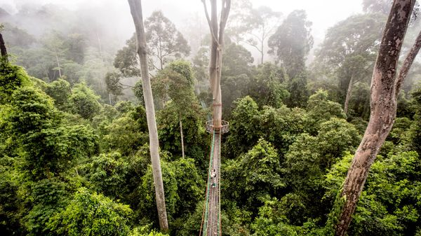

Jul 09, 2026 05:59 AM

TOWERING OVER 100 metres above the forest floor, the dipterocarp—named after its winged seeds, which spiral away in the wind—is the tallest tropical tree in the world. For a plant, being tall is an advantage: if your neighbours cannot overshadow you, that leaves you with the lion’s share of the sunlight.
But trees need water as well as light, and here being tall presents a problem. The physics of moving liquid through thin channels means that the taller a tree gets, the harder it is to pump water from the soil to the leaves in the crown. Scientists had assumed that would leave big trees, like dipterocarps, more vulnerable than their more diminutive competitors when water was scarce. But in a paper published on July 2nd in Science, a team led by Paulo Bittencourt of Cardiff University have shown that, thanks to some clever evolutionary engineering, that is not true.
A tree’s trunk contains a network of tubes known as xylem whose job is to ferry water from the roots to leaves. While many animals pump fluid around their bodies with a heart, trees rely on evaporation to keep the liquids flowing. As water in the leaves escapes into the air, it creates suction in the xylem. That draws more water up to fill the space. That process is aided by the properties of water itself. Water molecules tend to cling to their neighbours, so that as one is drawn up, others follow. The molecules also adhere to the walls of the xylem, helping to counteract the downward pull of gravity.
This plumbing system, clever as it is, poses two problems for tall timber. The first is due to gravity. As the height of a tree increases, so does the tension towards the top of its xylem. If that tension gets too high the links between water molecules can break, allowing pockets of air to form and blocking the flow. The second is the length of the tubes themselves. It is harder to sip orange juice through a long straw than a short one. For the same reason—friction between the liquid and the walls, mostly—the greater the distance between a tree’s roots and leaves, the harder it is for water to flow up its xylem.
These challenges had led to a prediction among dendrologists: giant trees ought to have a harder time getting water up to their leaves, leaving them more at risk of drought. And yet, says Dr Bittencourt, actual data was lacking. That is perhaps not surprising, for collecting it is hard work. The tallest trees can be scaled only by specialist climbers.
Fortunately, some of Dr Bittencourt’s colleagues were experienced tree-climbers. The team chose as test subjects a collection of dipterocarps in a rainforest in north-eastern Borneo. Over the course of three months in 2022, the researchers measured 38 different trees. The team then monitored how fast 27 of those trees grew over 770 days from 2022 to 2024.
“What we found is that [the trees] were adjusting some key parameters so they could be very tall and still keep their leaves hydrated,” says Dr Bittencourt. Each tree’s water-transporting xylem widened as they ran from tip to base, which helps reduce resistance in the parts of the xylem closest to the ground. For the tallest trees, the widening was more pronounced than would be expected if they were simply scaled-up versions of their shorter relatives.
Gravity meant that the pulling power of leaves declined as trees got taller, as expected. But the dipterocarps had accounted for that too. Their highest leaves sported higher concentrations of osmolytes—chemicals that help cells hold their shape when water is scarce. That meant they were no more susceptible to wilting than those lower down. Thanks to such clever engineering, the researchers found no relation between a tree’s height and a reduction in its growth rate during a six-month drought that began in December 2023.
By virtue of their enormous size, the tallest 1% of trees store over half of the carbon in Earth’s forests. The assumption that these giants will be the most severely affected by droughts is factored into some climate-change models. The dipterocarp’s clever plumbing suggests those models may need pruning. ■
Curious about the world? To enjoy our mind-expanding science coverage, sign up to Simply Science, our weekly subscriber-only newsletter.